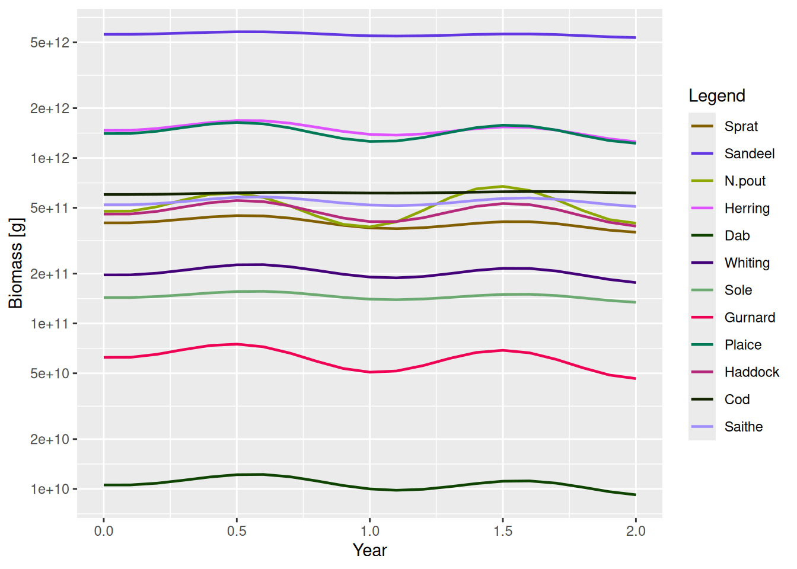
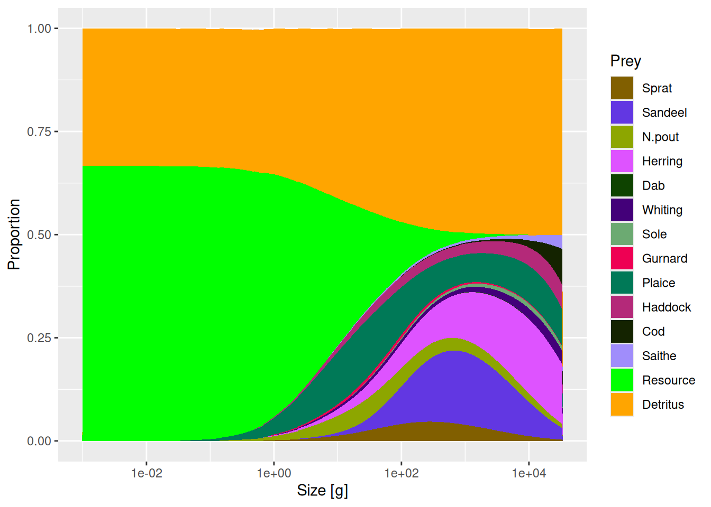

ext_mort(params) <- my_mort_array # e.g. outside predators
ext_encounter(params) <- my_food_array # extra unmodelled foodThis guide covers the mechanisms for customising mizer’s dynamics without editing the package source, from external encounter and mortality through to whole new ecosystem components, with worked examples of each. To package an extension up for others to use, see the guide to creating a mizer extension package.
This is for changing how mizer works without editing the package source. Pick the lightest mechanism that expresses your change, and reach for a heavier one only when the lighter one cannot do the job. All setters return a new MizerParams — reassign the result.
| Goal | Use |
|---|---|
| Add a fixed external food or mortality source (no new state variable) |
ext_encounter() / ext_mort()
|
| Add an extra encounter or mortality that depends on the model state but has no state of its own |
other_encounter() / other_mort()
|
| Change how one built-in rate is calculated | setRateFunction() |
| Add a new dynamical pool (detritus, carrion, oxygen, second resource…) | setComponent() |
| Store parameters for your custom code |
other_params() (model-wide) or component_params (one component) |
| Extend plots/summaries for a custom model type | S3 methods on an S4 subclass |
| Replace arbitrary internal mizer code (last resort) | customFunction() |
If you only need to change one rate, prefer setRateFunction() over replacing mizerRates() or patching internal functions. If you only need to change a number the rates are computed from, you do not need this skill at all — see the guide to changing model parameters.
External encounter and mortality (lightest)
For a background process that affects fish but needs no state of its own. Both are species × size arrays: ext_encounter (mass/year, added to getEncounter()) and ext_mort (1/year, added to mortality).
Build the array from the model’s own grid rather than from literal dimensions, so its shape and dimnames come out right, and add to what is already there rather than overwriting it. An extra food source scaling allometrically with body size:
params_ext <- NS_params
extra_food <- outer(rep(0.1, nrow(species_params(params_ext))),
w(params_ext)^(3/4))
ext_encounter(params_ext) <- ext_encounter(params_ext) + extra_foodThis is the right choice when the extra process is not itself depleted or replenished, and the fish do not feed back on it. If it needs to respond to the fish, you need a component instead.
External encounter changes the realised encounter and feeding level, but it does not enter the power-law reference state used by get_gamma_default() and get_f0_default(). Those defaults likewise exclude functions registered with other_encounter(), including a component’s encounter_fun: they describe feeding on the reference resource alone, before extra food sources are added.
Replacing a rate function
Use when the model still follows mizer’s standard flow but one step should be computed differently — a time-dependent encounter, an alternative growth or recruitment formulation, and so on. Mizer stores the function name, so the function must be findable by name in the global environment or an installed package; a function defined inside another function cannot be found.
params <- setRateFunction(params, "Mort", "myMort")
getRateFunction(params) # list the current rate functionsReplaceable rates include Rates, Encounter, FeedingLevel, PredRate, PredMort, Mort, ResourceMort, EReproAndGrowth, ERepro, EGrowth, Diffusion, FMort, RDI (density-independent recruitment), and RDD (density-dependent recruitment). Resource dynamics is set separately via resource_dynamics().
Write your function by starting from the built-in (mizerMort(), mizerEncounter(), …): copy it, change what you need, and keep the same signature and return dimensions/dimnames. Custom rate functions receive params, the current state (n, n_pp, n_other), t, and previously computed rates via ... — accept ... and pull what you need from it.
# Add a size-independent extra mortality, its size stored in other_params
myMort <- function(params, n, n_pp, n_other, t, f_mort, pred_mort, ...) {
base <- mizerMort(params, n, n_pp, n_other, t, f_mort, pred_mort, ...)
base + other_params(params)$extra_mort # a scalar or species × size array
}
other_params(params)$extra_mort <- 0.1 # store the parameter
params <- setRateFunction(params, "Mort", "myMort")Time-dependent rates are the key reason to reach for setRateFunction(). Species parameters and rate arrays are fixed for the whole simulation, but a rate function receives the current time t and can therefore change as the run proceeds — seasonal forcing, a warming trend, a management measure that switches on in a given year. Wrap the built-in and scale its result by t:
seasonalMort <- function(params, t, ...) {
mizerMort(params, t = t, ...) * (1 + 0.3 * sin(2 * pi * t)) # t in years
}
params <- setRateFunction(params, "Mort", "seasonalMort")Never let a rate jump as a function of abundance. Depending on t or w discontinuously is fine; depending on n, n_pp or n_other discontinuously is not. Mizer’s time steppers freeze the rates during each density update, so they cannot see a threshold being crossed within a step. A rule like if (biomass < threshold) effort <- 0 gives a trajectory that keeps changing as dt is refined, makes solver = "newton" stall, and makes getStability() return a confident but meaningless answer — with no warning from mizer. Choosing method = "tr_bdf2" does not help. Give the switch a finite width instead:
max()/min() kinks are continuous and much less troublesome — they cost some accuracy, not correctness. See the Discontinuous rate functions article.
Signatures and return shapes
Each replaceable rate has its own signature and its own expected return shape. setRateFunction() calls your function with test inputs at registration and checks the dimensions, so a mistake here surfaces immediately rather than mid-projection.
| Rate | Signature | Return value |
|---|---|---|
Encounter |
function(params, n, n_pp, n_other, t, ...) |
numeric matrix, species × size |
FeedingLevel |
function(params, n, n_pp, n_other, t, encounter, ...) |
numeric matrix, species × size |
EReproAndGrowth |
function(params, n, n_pp, n_other, t, encounter, feeding_level, ...) |
numeric matrix, species × size |
ERepro |
function(params, n, n_pp, n_other, t, e, ...) |
numeric matrix, species × size |
EGrowth |
function(params, n, n_pp, n_other, t, e_repro, e, ...) |
numeric matrix, species × size |
PredRate |
function(params, n, n_pp, n_other, t, feeding_level, ...) |
numeric matrix, species × full size grid |
PredMort |
function(params, n, n_pp, n_other, t, pred_rate, ...) |
numeric matrix, species × size |
FMort |
function(params, n, n_pp, n_other, t, effort, e_growth, pred_mort, ...) |
numeric matrix, species × size |
Mort |
function(params, n, n_pp, n_other, t, f_mort, pred_mort, ...) |
numeric matrix, species × size |
RDI |
function(params, n, n_pp, n_other, t, e_growth, mort, e_repro, diffusion, ...) |
numeric vector, one value per species |
RDD |
function(rdi, species_params, params, t, ...) |
numeric vector, one value per species |
ResourceMort |
function(params, n, n_pp, n_other, t, pred_rate, ...) |
numeric vector, one value per full size bin |
Diffusion |
function(params, n, n_pp, n_other, t, feeding_level, ...) |
numeric matrix, species × size |
Rates |
function(params, n, n_pp, n_other, t, effort, rates_fns, ...) |
named list with all standard rate components |
Three rules that follow from the table:
-
Return plain numeric objects. Never return an
ArraySpeciesBySizeorArrayTimeBySpeciesfrom a function registered withsetRateFunction(); theget…()wrappers add those classes afterwards where they belong. -
Most size-resolved rates match
initialN(params)in both dimensions and dimnames. The exceptions arePredRate, which is on the full prey grid (w_full), andResourceMort, which is one value perw_fullbin rather than one per species. - Build outputs from existing mizer arrays so dimensions and dimnames are inherited. Most bugs in extension code are the right numbers in the wrong shape.
Respecting the model’s quadrature scheme
A model may be on either of two quadrature schemes, selected by the bin_average entry of second_order_w() (see the guide to running a mizer simulation). Code that ignores this looks correct and passes its tests, because the default is the first-order scheme — and is then silently wrong by around 10% for anyone who has switched the second-order scheme on. Three rules:
-
Build derived quantities from the rate functions, don’t re-derive them.
getEncounter(),getFeedingLevel(),getPredRate(),getEGrowth()already carry the right quadrature for whichever scheme the model is on. Re-deriving a rate from the species parameters is how this goes wrong. -
To go inside the encounter convolution, use
encounter_kernel(), notpred_kernel().pred_kernel()returns the kernel point-sampled on the grid — right for plotting, and the form in which you supply a custom kernel, but not the bin-integrated coefficients the convolution consumes. Pairencounter_kernel()with the plain point prey weightparams@w_full * params@dw_full, which is a normalisation the kernel is built to cancel, so it must not itself be bin-averaged. -
If your setter precomputes an array from a size-dependent parameter, gate it on
params@second_order_w[["bin_average"]]the waysetExtMort()andsetResource()do, and do the integral once at setup so projection cost is unchanged.
For a summary-style integral \(\int N_i(w) K_i(w) dw\), do not write the sum at all: sizeIntegral(params, weighting = K, min_w = ..., max_w = ...) does the integral under whichever scheme the model is on and wraps the result — see “Writing your own indicator” in the guide to analysing and plotting mizer results. If you need the gating on its own, for a weight you are not integrating, that is bin_average_weight(K, params). Test any new integral with the flag on as well as off; a test on the default path alone proves nothing.
Adding a component
Use setComponent() for a new dynamical quantity — any R object: a scalar, a vector on the size grid, or a list. A component may contribute in up to three ways:
-
dynamics_fun— updates the component’s own state during projection, -
encounter_fun— adds togetEncounter(), -
mort_fun— adds togetMort().
params <- setComponent(
params, "detritus",
initial_value = 1e5,
dynamics_fun = "detritus_dynamics",
encounter_fun = "detritus_encounter", # optional
component_params = list(rho = 0.1)
)Access components with getComponent(), remove them with removeComponent(). Component state is available to all custom functions as n_other[["detritus"]], and its parameters via component_params.
If there is nothing for dynamics_fun to update — a starvation or senescence mortality reads the state but keeps none of its own — do not invent a component for it. Register the function on its own instead:
other_mort(params)[["starvation"]] <- "starvMort"
other_encounter(params)[["scavenging"]] <- "scavengingEncounter"getMort() and getEncounter() add the result of every function registered this way, exactly as they do for a component’s mort_fun and encounter_fun. The two registries do not overlap: an entry that belongs to a component is owned by setComponent(), reported by getComponent() and removed by removeComponent(), and other_mort() deliberately does not list it — the same split other_params() makes for component parameters. Assigning NULL removes a free-standing entry.
The functions named in that call take the component’s name as a component argument, so one implementation can serve several components, and reach their own state as n_other[[component]] and their own parameters as params@other_params[[component]]. A dynamics function additionally receives the current rates and the step length dt, and returns the component’s new state — not a rate of change, so integrate the step yourself. This pair makes a detritus pool that fish eat and that relaxes back towards a capacity:
detritusEncounter <- function(params, n, n_pp, n_other, component, ...) {
params2 <- params
# Drop this component before delegating, or mizerEncounter() calls back
# into this function and recurses.
params2@other_encounter[[component]] <- NULL
mizerEncounter(params2, n = n, n_pp = n_other[[component]],
n_other = n_other, ...)
}
detritusDynamics <- function(params, n_other, rates, dt, component, ...) {
detritus <- n_other[[component]]
p <- params@other_params[[component]]
interaction <- params@species_params$interaction_resource
mort <- as.vector(interaction %*% rates$pred_rate)
target <- p$rate * p$capacity / (p$rate + mort)
# Exact over the step, so the result does not depend on dt
target - (target - detritus) * exp(-(p$rate + mort) * dt)
}Passing the component’s own abundance to mizerEncounter() as n_pp, as detritusEncounter() does, is the trick for making a component act as an extra prey spectrum: it is then eaten through the ordinary predation kernel and shows up in getDiet() without further work.
Components and the steady state
A component you give a dynamics_fun is outside mizer’s steady-state machinery, in both directions, and a model with one needs checking accordingly:
-
tuneSteadyState(),findSteadyState(solver = "newton")andgetStability()hold the component at its stored value and solve the consumer-resource subsystem around it. Mizer warns when it meets a component with dynamics of its own. -
isSteady(), thesummary()drift line andproject(check_steady = TRUE)judge that same subsystem. A component’s state can be any object at all, so mizer cannot form a biomass for it and does not fold its rate of change into the number. A model can beisSteady()while your component is moving.
Mizer names any component that is moving whenever it reports on the drift, and attr(getSteadyResidual(params), "other") holds the per-cell relative rates of change it measured, reduced by max(abs(...)) for reporting — an overestimate whenever the component has fast cells holding almost nothing, which is why that number is reported rather than compared against a tolerance.
To settle a component along with everything else, use projectUntilSettled(), which advances it like every other state variable; its stopping rule does wait for the component. Issue #589 tracks giving components a way to declare their own reduction and so re-enter the criterion.
Worked example: external encounter and mortality
The extra_food built above adds straight to the total encounter rate:
enc_base <- getEncounter(NS_params)ℹ No `a` column so using a = 0.01 in w = a l^b, with w in g and l in cm.
ℹ No `b` column so using the isometric default b = 3 in w = a l^b.
ℹ No `a` column so using a = 0.01 in w = a l^b, with w in g and l in cm.
ℹ No `b` column so using the isometric default b = 3 in w = a l^b.
ℹ No `a` column so using a = 0.01 in w = a l^b, with w in g and l in cm.
ℹ No `b` column so using the isometric default b = 3 in w = a l^b.
ℹ No `a` column so using a = 0.01 in w = a l^b, with w in g and l in cm.
ℹ No `b` column so using the isometric default b = 3 in w = a l^b.
enc_ext <- getEncounter(params_ext)ℹ No `a` column so using a = 0.01 in w = a l^b, with w in g and l in cm.
ℹ No `b` column so using the isometric default b = 3 in w = a l^b.
ℹ No `a` column so using a = 0.01 in w = a l^b, with w in g and l in cm.
ℹ No `b` column so using the isometric default b = 3 in w = a l^b.
ℹ No `a` column so using a = 0.01 in w = a l^b, with w in g and l in cm.
ℹ No `b` column so using the isometric default b = 3 in w = a l^b.
ℹ No `a` column so using a = 0.01 in w = a l^b, with w in g and l in cm.
ℹ No `b` column so using the isometric default b = 3 in w = a l^b.
range(enc_ext - enc_base, na.rm = TRUE)[1] 5.623413e-04 2.820537e+02External mortality works the same way — note the negative exponent, since mortality falls with size where the extra food rose with it:
Worked example: a seasonal encounter rate
Wrapping a built-in rate, in full. This one takes the amplitude and period of a seasonal cycle from other_params():
params <- NS_params
other_params(params) <- list(season_amplitude = 0.2, season_period = 1)
seasonalEncounter <- function(params, n, n_pp, n_other, t, ...) {
p <- other_params(params)
multiplier <- 1 + p$season_amplitude * sin(2 * pi * t / p$season_period)
multiplier * mizerEncounter(params, n = n, n_pp = n_pp, n_other = n_other,
t = t, ...)
}Registered by name, the rate now moves with t:
params2 <- setRateFunction(params, "Encounter", "seasonalEncounter")ℹ No `a` column so using a = 0.01 in w = a l^b, with w in g and l in cm.
ℹ No `b` column so using the isometric default b = 3 in w = a l^b.
enc0 <- getEncounter(params2, t = 0)
enc_quarter <- getEncounter(params2, t = 0.25)
range(enc_quarter / enc0, na.rm = TRUE)[1] 1.2 1.2At t = 0.25 the multiplier is at its maximum, 1 + season_amplitude, exactly as intended. The seasonality then carries through a projection:
sim <- project(params2, t_max = 2, t_save = 0.1)
plotBiomass(sim)
A good first test for such a function checks that at t = 0 it agrees with mizerEncounter(), that at t = 0.25 it is scaled by 1 + season_amplitude, and that its result has the same dimensions and dimnames as initialN(params).
Worked example: a detritus-like component
Putting detritusEncounter() and detritusDynamics() from above to work. The component is stored on the full resource size grid, and starts at half the capacity it relaxes towards:
detritus_params <- list(capacity = initialNResource(params),
rate = params@rr_pp)ℹ No `a` column so using a = 0.01 in w = a l^b, with w in g and l in cm.
ℹ No `b` column so using the isometric default b = 3 in w = a l^b.
params3 <- setComponent(
params,
component = "Detritus",
initial_value = initialNResource(params) / 2,
dynamics_fun = "detritusDynamics",
encounter_fun = "detritusEncounter",
component_params = detritus_params,
colour = "orange"
)ℹ No `a` column so using a = 0.01 in w = a l^b, with w in g and l in cm.
ℹ No `b` column so using the isometric default b = 3 in w = a l^b.Its initial state is now in initialNOther(params3)$Detritus and its settings in getComponent(params3, "Detritus"). Because it is eaten through the ordinary predation kernel, it appears in the diet with no further work:
plotDiet(params3, species = "Cod")ℹ No `a` column so using a = 0.01 in w = a l^b, with w in g and l in cm.
ℹ No `b` column so using the isometric default b = 3 in w = a l^b.
To let the component kill fish as well as feed them, give setComponent() a mort_fun too.
Extending plots and summaries: S3 methods on an S4 subclass
This is the most flexible route that still works with mizer’s public generics. Although MizerParams and MizerSim are S4 classes, mizer registers most of its user-facing methods as S3 methods. So an extension defines a formal S4 subclass of these objects and provides S3 methods for it — getBiomass.MyMizerSim(), plotBiomass.MyMizerSim(), summary.MyMizerParams() — which is what makes a summary or plot account for components the extension added. Every such method must call NextMethod(), so that several extensions loaded at once compose instead of overwriting each other.
This only really works inside a package, because the marker class is created by mizer when the package loads. Writing that package — the class, the .onLoad registration and the methods — is the subject of the guide to creating a mizer extension package, and the order the methods then run in is the subject of the guide to using mizer extension packages.
Storing parameters
-
other_params(params)$foo <- value— model-wide parameters your custom functions can read. -
component_params(asetComponent()argument) — parameters scoped to one component.
Keeping the two separate is what keeps params@other_params readable when several custom functions are in play.
customFunction() (last resort)
customFunction() replaces an internal mizer function inside the package namespace. Reach for it only after confirming that setRateFunction(), setComponent(), resource_dynamics()<- and setReproduction() cannot express the change: a replacement that is not fully compatible breaks the package, and nothing checks that it is.
Testing and packaging
- Test both halves: that
setRateFunction()orsetComponent()succeeds, and that the downstream function you actually care about —getEncounter(),getDiet(),project()— uses your extension as intended. - After registering a custom rate, run
project()on a short horizon and check the affectedget…()output looks right; write atestthattest that compares against a hand-computed value on a small model. - If a custom rate depends on the abundances through a threshold, read Discontinuous rate functions before trusting any results.
- Once an extension is useful in more than one project, or you want to give it to someone else, make it a package: a stable namespace mizer can resolve function names in, somewhere for tests and documentation to live, and a version that gets recorded in
params@extensions. Everything that only matters once you share —.onLoadregistration, marker classes, dispatch viaNextMethod(), bundled data objects, reporting throughinfo_level, and upgrading objects saved by an earlier version — is in the guide to creating a mizer extension package. For the other side of it, loading and saving a model that needs an extension package, see the guide to using mizer extension packages. - For a larger design, it is worth discussing the interface on the mizer issue tracker before committing to it.